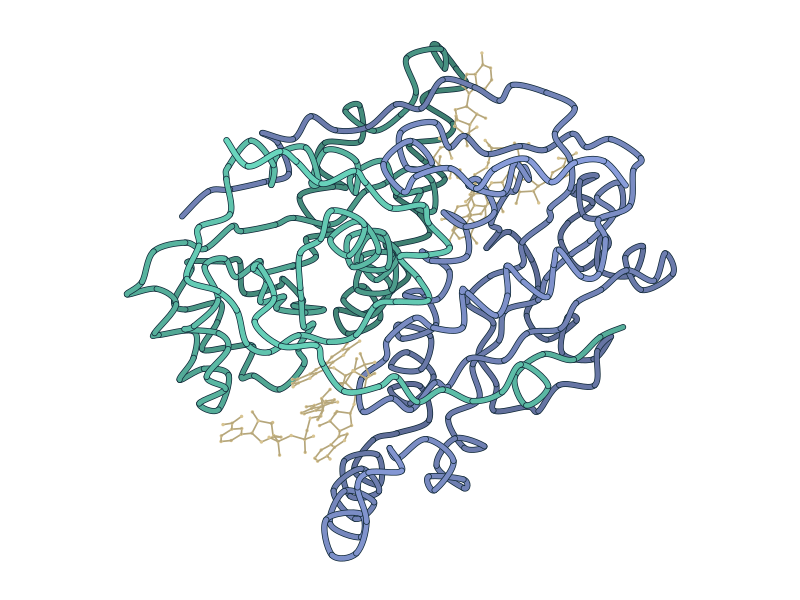

Generative scaffold design for protein assemblies, with supplied interfaces and global symmetry preserved during sampling.
My contribution: Task compiler and constrained sampling workflow.
Read the projectRESEARCH PORTFOLIO / 2026
HUST × Université Paris-Saclay
Designing proteins.
Connecting computation
to experiment.
I develop computational-to-experimental research loops for protein engineering, from structure generation to biological validation.

01 / SELECTED RESEARCH
Each project follows a concrete question, my contribution, and the evidence so far.
01 / STRUCTURE
Generative methods, constrained interfaces, and state-specific design.
Generative scaffold design for protein assemblies, with supplied interfaces and global symmetry preserved during sampling.
My contribution: Task compiler and constrained sampling workflow.
Read the projectState-specific structural seeding and bridge design for membrane proteins, supported by protein production and cryo-EM sample preparation.
My contribution: State-specific modeling and cryo-EM sample preparation.
Read the project02 / FUNCTION
From selective molecular capture to cofactor-guided enzyme engineering.


Pseudocyclic protein binders for lysine-linked LCA modifications, combining backbone generation and sequence design for selective recognition.
My contribution: Binder architecture and computational design pipeline.
Read the projectStructure-guided enzyme engineering for NAD⁺ regeneration and H₂O₂ production, focusing on cofactor recognition and retention.
My contribution: Cofactor modeling and mutation prioritization.
Read the project03 / BIOLOGY
Structural interpretation and single-cell analysis connect models to biology.

Structure-informed analysis of NSUN2 and NAT10 mediated translational regulation in TNBC and ATC.
My contribution: Structural modeling and interface interpretation.
Read the projectSingle-cell analysis workflow optimization for hypoxia and nutrient-deprivation response mapping.
My contribution: QC refinement and transcriptomic interpretation.
Read the project02 / PUBLICATIONS
Published research, with links to the full papers.
Haixi Zhao, Jiarong Li, Yilin Huang, Nan Xiang, Chen Jin, Ruijian Shao, Su Sun
doi:10.1016/j.micres.2026.128741Bo Wei, Haixi Zhao, Shi Chang, Wenlong Wang
doi:10.1186/s11658-026-00977-xWenlong Wang, Ying Ding, Haixi Zhao, Shouman Wang, Juan Huang, Lunquan Sun
doi:10.1186/s11658-025-00781-zRuijian Shao, Zhenxiong Zhang, Liduo Lu, Yixue Zhou, Yilin Huang, Haixi Zhao, Fuying Ma, Shangxian Xie, Hongbo Yu.
An enzyme cascade of pre-oxidation and in situ H₂O₂ generation enables LiP-driven lignin dimer depolymerization. Submitted to Journal of Agricultural and Food Chemistry.
03 / ABOUT
I am in the Sino-French dual-degree program between Huazhong University of Science and Technology and Université Paris-Saclay, with expected graduation in June 2027.
I am interested in how computational methods can guide the design of protein structure and function. My projects span protein assemblies, molecular recognition, membrane proteins, and enzyme engineering, with experience in algorithm development, structural modeling, protein expression and purification, and cryo-EM sample preparation.
I enjoy the point where an abstract design idea becomes something concrete: a sampling method, a protein model, or a molecule we can test.
04 / BEYOND THE BENCH
Gold Medal & Best iGemers · TriScale digital-twin workflow
View project →2nd Prize · Directed-evolution project integration and delivery
View project →05 / CONTACT